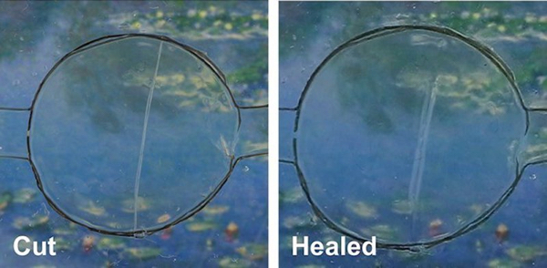

Info CPU
Исследователи Калифорнийского университета в Риверсайде представили первое в мире самовосстанавливающееся стекло для смартфонов, способное «залечивать» небольшие царапины и сколы
До сих пор существовало два способа оживить смартфон с разбитым после падения стеклом – заменить стекло или купить новый смартфон. Ученые из Калифорнийского университета в Риверсайде придумали третий способ: самовосстанавливающееся стекло для смартфона. 4 апреля 2017 г. его представили на очередном заседании Американского химического общества (American Chemical Society). Как пишет Business Insider, материал для такого экрана изготовлен из эластичного полимера и ионной соли. У материала есть особый тип связи - ион-дипольное взаимодействие. За счет него ионы способны притягивать полярные молекулы (с постоянным или наведенным дипольным моментом) других веществ. Когда материал повреждается или царапается, ионы и молекулы притягиваются друг к другу, чтобы «исцелить» материал. Он может растягиваться до 50 раз по отношению к исходному размеру. Было проведено несколько тестов на способность материала самовосстанавливаться и избавляться от разрезов и царапин. «После того, как материал был разорван надвое, он оказался способен «склеиться» до исходной кондиции в течение 24 часов», - пояснил участвующий в проекте химик Чао Ван (Chao Wang). Разрушенное стекло спсобно самовосстановиться в течение 24 часов Безусловно, вряд ли такое стекло сможет само собой собраться, будучи разбитым вдребезги, однако, по словам ученых, справиться с царапиной или небольшим сколом вполне может.Источник